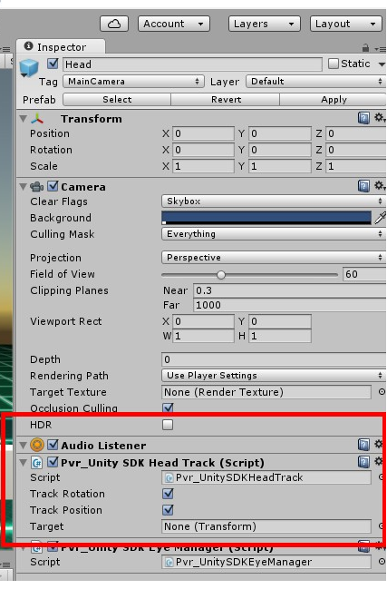
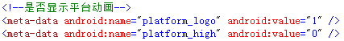

第十章 常见问题解答¶
10.1 Camera Culling Mask 如何设置¶
Pvr_UnitySDK中LeftEye 以及RightEye 的Camera中可设置属性Culling Mask:
1.适配过Cardboard SDK,使用过toggle culling mask选项的,可通过直接修改Camer属性完成.
2.如果需要代码修改toggle culling mask,可参见普通相机修改方式.
- 3.对于左右眼需要看不同物体的时候, 通过PicoVR左右眼相机Culling Mask来控制显示Layer, 左眼相机CullingMask不勾选右眼物体的Layer,右眼相机Culling Mask不勾选左
- 眼物体的Layer.
10.2 在PicoNeo中如何实现退出功能¶
开发者可以自己实现相应功能或者在SDK的AssetsPicoVRSDKScripts目录下，找到 QuitGame.cs脚本，将其拖动到PicoVR的GameObject的上,在运行时按返回键即可退 出, 注意此种方式, 开发者需要自己释放游戏或应用动态加载的资源.
10.3 如何将sensor 作用于场景其他物体¶
按以下步骤进行设置：
1、将场景中PicoVR 中的 head 上PicoVRHeadTrack 脚本不勾选：
2、选中想要作用的物体，添加PicoVRHeadTrack 脚本。
10.4 PicoNeo上要达到比较流畅的效果，对帧率及场景有什么要求¶
帧率：
PicoNeo场景帧率不得低于30帧,建议45帧以上。
场景：
模型三角面片控制在10万以内
模型顶点数控制在10万以内
普通unity灯光例如电光源数量控制在50以内
普通unity粒子系统数量控制在50以内
Unity shader尽量使用效率较高的
优化方法举例：
在保证显示的情况下减少模型面片定点数量
尽力共用材质，动画
尽量使用压缩纹理格式
尽可能少的使用灯光特效等
尽量使用静态批处理
脚本优化，减少不必要内存，计算等资源消耗
10.5 如何替换应用打开时的加载动画¶
替换应用打开时的加载动画仅限Goblin及Pico Neo，即应用打开前会加载Pico专有的加载 界面，如想使用Uinty默认的加载界面或者自定义加载界面，请打开AndroidManifest找到 platform_logo标签把android:value置为1
10.6 如何关闭在手机上运行游戏时自动连接3dof的功能¶
在普通手机上，运行Pvr_Controller Demo后，会自动搜索附近的手柄，并自动连接第一 个搜索到的Pico 3dof Controller，当连接成功后，停止搜索。如果连接不成功,15秒后会弹 出提示框,提示用户重新搜索或退出搜索. 假如需要关闭自动连接功能。需要把Pvr_ControllerLink.cs文件中的bool isAutoConnect 修改为false即可。